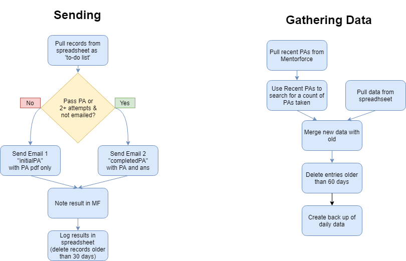

Event-based emailer with Python
Python (pandas, pywin32, selenium), SQL
Summary
When students completed a practice test, our faculty team had each been emailing individual students a templated email on recommended next steps based on how they did, and adding a note to their student record. I automated this for my team using a daily Python script that involved SQL querying our student database, processing the data in Python/pandas, emailing students customized messages with pywin32, and using selenium to automate the note writing process.
Details

WGU uses a variant of Salesforce for our student
records, which we access using the
simple salesforce package. Once initiated, queries were
done with queries in a dialect of SQL.
I'm going to present a simplified version of the queries and code below. This will demonstrate the methodology without revealing the database architecture of WGU. I'll also only provide the interesting key components here.
Querying the database
We want to gather all recent Preassessment attempts, then use the list of id numbers to count how many total attempts each user has attempted so far, send anyone not yet notified a customized email based on their results and number of attempts, timezone, etc., note the outreach in their student record, and log the resulting dataframe in a spreadsheet (used to verify if they have been notified already).
sf = Salesforce(instance='srm.my.salesforce.com', session_id=session_id)
# n is the number of days to search for new assessment results
# str_start is the string defining the left bound for searching dates
str_start = (datetime.now() + timedelta(days=-n)).date().isoformat()
sqlstring = """SELECT
StudentRecord__r.CourseNumber__c,
ExamScore__c,
StudentRecord__r.Contact__r.FirstName,
StudentRecord__r.Contact__r.Email,
StudentRecord__r.Contact__r.Timezone__c,
FROM
StudentExamAttempt__c
WHERE
( StudentExamAttempt__r.Course__c = 'C784'
OR StudentExamAttempt__r.CourseCode__c = 'L121')
AND (Date__c >= {0}T00:00:00-07:00 OR Created >= {0}T00:00:00-07:00)
AND Score__c != 'NOT ATTEMPTED'
""".format(str_start)
records = (sf.query(sqlstring))['records']
The records come in the form of a Python dictionary. We
create a new dictionary named
rows which flattens and simplifies the returns of the
SQL query via Python. Then initialize a DataFrame with df = pd.DataFrame(rows)
This gives us a list of recent Preassessment
attempts. Since we want to send a different message if they've
taken this test more than once, we need to search for all
Preassessment attempts for the ID numbers we've gathered so
far. Then pandas'
df.groupby('id').count() gives us a beautiful one-line
way to count total number of Preassessment attempts after
querying for all Preassessment attempts matching the IDs found
in the previous query.
def countpas(ids,session_id):
"""takes a list of id number strings and session_id for Salesforce access
returns DF counting number of PAs attempted"""
# join list of strings to a single string formatted for SQL
ids_str = "('"+ ( "','".join(ids) ) + "')"
sqlstring = """
SELECT AssessmentCode__c, StudentRecord__r.Contact__r.ID__c
FROM
StudentRecord__c
WHERE
StudentRecord__r.Contact__r.ID__c IN {0}
AND
AssessmentCode__c IN ('PAQO', 'PQQC')
LIMIT 1000
""".format(ids_str)
sf = Salesforce(instance='srm.my.salesforce.com', session_id=session_id)
records = (sf.query(sqlstring))['records']
# flatten the dictionary returned
rows = []
for rec in records:
row={}
row['code'] = rec['AssessmentCode__c']
row['id'] = rec['StudentRecord__r']['Contact__r']['ID__c']
rows.append(row)
df = pd.DataFrame(rows)
df = df.groupby('id').count()
df.columns = ['count']
return df Sending emails
Next in the pipeline is pywin32
specifically the win32com.client
to send customized emails. I use
os.getcwd() as this was designed to be portable to other
systems if needed. Here is a trimmed down example of how to write an
email with pywin32:
import win32com.client as win32
outlook = win32.Dispatch('outlook.application')
# emailTemplate points to one of several .ost Outlook email templates
# defined previously based on how they did, how many tries it took, etc.
mail = outlook.CreateItemFromTemplate(
os.getcwd()+'\\'+emailTemplate
)
# how to set attributes of the email,
# including customizing based on timezone
mail.To = row['email']+'@wgu.edu'
mail.SentOnBehalfOfName = 'healthstats@wgu.edu'
mail.Subject = subject
mail.HtmlBody = mail.HtmlBody.replace("AvailableHours",hours[row['timezone']])
mail.Send()
Automated form filling
As an institution where students work at their own pace, WGU is required to document substantive student interaction with faculty, as too little interaction from students would jeopardize its accreditation. This is done within Salesforce, but modifying records using python could lead to problems. Instead, we use selenium to automate a chrome browser to manually enter the information one student at a time.
from selenium import webdriver
from selenium.webdriver.common.keys import Keys
#available at selenium website
wd = webdriver.Chrome(os.getcwd()+"\\chromedriver.exe")
def getel(css_string):
#a shorter alias to get elements based on css selector string
global wd
return wd.find_element_by_css_selector(css_string)
def typein(element,text):
# entering long text one key press at a time using selenium
# is significantly slower than using the clipboard
initialClip = pyperclip.paste()
pyperclip.copy(str(text))
element.clear()
element.send_keys(Keys.CONTROL,'v')
pyperclip.copy(initialClip)
With loginLink defined to be the address to the login
page, and after finding the CSS selector names for the username and
password text input elements on the page, we can use these functions
to log-in to the system.
wd.get(loginLink)
getel("#login-username").clear()
typein(getel("#login-username"),"greg.simon")
getel("#login-password").clear()
typein(getel("#login-password"),userInput)
getel("#login-password").send_keys(Keys.ENTER)
The code to enter the student note and information is very similar but takes quite a bit of careful CSS selection to navigate to the right place, enter the custom note based on the situation, and make sure AJAX on the page loads properly.
Logging results
We close with the code to log the resulting data frame as a way to verify what students were already emailed (to prevent double emailing) as well as for bug catching. Pandas has brilliant support for writing and reading Excel spreasheets.
def logResults(df):
timestring = datetime.now().strftime("%m-%d-%H_%M_%S")
writer = pd.ExcelWriter(
os.getcwd()+'\\PreassessmentNotifications\\logs\\PAData'+timestring+'.xlsx',
engine='xlsxwriter'
)
df.to_excel(writer,'Sheet1')
When the queries are made, this most recent Excel log is loaded as the df_old , which we apply a function to
and use a boolean mask to select records only from the last week, to be merged with the most
recently pulled data, and duplicate entries dropped. This serves two
purposes: we don't email the same person twice about the same
Preassessment, and we don't email the same person at all within 7
days, which was a decision we made as a team.
def withinLastWeek(MDHM):
# given string of form '%m-%d %H:%M', returns True if date is within last week
year_week_ago = (datetime.now() - timedelta(days=7)).year
delta = datetime.now() - datetime.strptime(str(year_week_ago)+'-'+MDHM,'%Y-%m-%d %H:%M')
return (delta.days < 7)
bool_recent = df_old['updated'].apply(withinLastWeek)
df_old_recent = dfold[bool_recent]
df_merged = pd.concat([df_old_recent,df_new])
df_merged['id'] = dfmerged['id'].apply(str)
#if row already exists, keep original row only
df_cleaned = df_merged.drop_duplicates(['pidm'],keep='first')
df_cleaned.reset_index(inplace=True,drop=True)
What did I learn?
A lot! This was the largest project I had undertaken so far utilizing many packages and skills to create a full automation pipeline for a complicated series of steps. This project demonstrates the versatility of python, and the elegance and power of pandas for data gathering, cleaning, and analyzing.
This code has run successfully for several years. It conservatively saved about 15 minutes per work day for each of my dozen Ph.D. teammates, while sending a more personalized and customized email of recommendations, and sending it quicker. My teammates were and continue to be ecstatic about this and other automation help I've been able to create.